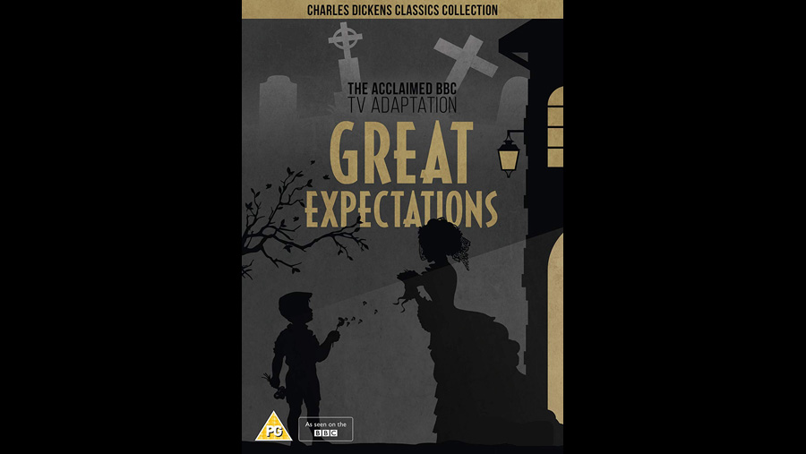

| Character | Actor |
|---|---|
| Abel Magwitch | John Tate |
| Joe Gargery | Neil McCarthy |
| Young Pip | Christopher Guard |
| Uncle Pumblechook | Norman Scace |
| Miss Havisham | Maxine Audley |
| Jaggers | Peter Vaughan |
| Philip "Pip" Pirrip | Gary Bond |
| Estella | Francesca Annis |
| Herbert Pocket | Richard O'Sullivan |
| Wemmick | Bernard Hepton |
| Orlick | Ronald Lacey |
| Role | Person |
|---|---|
| Director | Alan Bridges |
| Screenplay | Hugh Leonard |